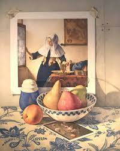
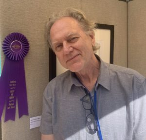

We are dedicated to supporting our local artists.
All upcoming events may be found here, we hope to see you there!


The Art Fest of Fort Myers states, "Dennis Angel has been an artist
and art educator for over 30 years. His fine pencil drawings
have been included in over 200 national and international
exhibitions. Congratulations for taking home the 2020
Best of Show award at ArtFest Fort Myers! We are so
happy he joined us for the first time for our 20th
Anniversary festival. Please check out Dennis and his
artwork at http://www.dennisangel.com/."